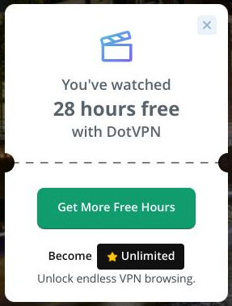
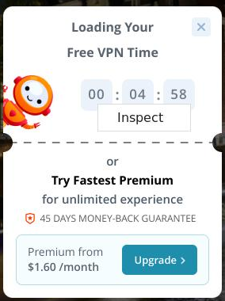
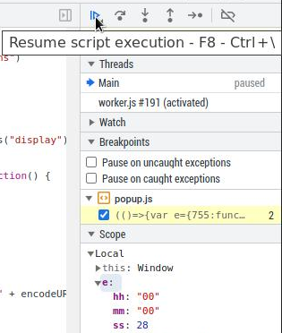

На основе собственных проб и ошибок, выяснено, что в 2024 году работают как минимум два VPN-сервиса, через которые можно организовать доступ к ChatGPT. Это сервисы, которые устанавливаются как плагин к браузеру Google Chrome или FireFox.
Первый плагин: небезызвестный Browsec. В корпоративной сети проработал до сердины 2024, затем стал кем-то блокироваться.
Второй плагин: DotVPN (https://chromewebstore.google.com/detail/dotvpn-fast-private-vpn/kpiecbcckbofpmkkkdibbllpinceiihk?utm_source=ext_app_menu). Когда не работает Browsec, можно переключаться на него, и сайты, которые блокируют доступ из России, вновь открываются.
У плагина DotVPN есть одна особенность: он платный, но в нем можно получить некоторое время бесплатного доступа. Если пользоваться VPN приходится время от времени, то это неплохая бесплатная альтернатива. У DotVPN, как завелось во всех браузерных VPN, максимально непонятный интерфейс. Для того, чтобы соедениться с VPN-сервером, надо нажать на фотографию (карточку) того места, где должно произойти соединение. После первого сеанса работы с DotVPN, при следующем запуске будет появляться надпись:
You've watched 1 hour Free witch DotVPN
Переводчики не могут адекватно перевести это предложение. Видимо, оно означает, что вы использовали 1 час бесплатного DotVPN (хотя, на самом деле первый сеанс бесплатного использования длится дольше). Чтобы получить еще бесплатный доступ, надо нажать на зеленую кнопку Get More Free Hours.

Появится окно с обратным отсчетом, обычно на 1 минуту или больше. После этого появится кнопка Connect Now для получения бесплатного соединения, и дальше работа с этим VPN происходит как обычно.
Чтобы не ждать длительное время обратного отсчета, надо знать, что все подобные плагины к браузеру написаны на JavaScript. А в работу JS можно вмешиваться средствами самого браузера. Поэтому если нажать на счетчик правой кнопкой мыши, то появится кнопочка Inspect:

Далее те, кто знает JS, легко найдут условие в котором проверяются hh, mm, ss для кое-какого объекта. И если этим значениям установить отрицательное значение, а затем нажать кнопку Resume, то время ожидания закончится.

После этого, опять же, сразу появится кнопка Connect Now, и после ее нажатия соединение будет установлено.
DotVpn немного капризный, и иногда траффик через него тупит. Поэтому для открытия той или иной страницы иногда может потребоваться пару раз обновить страницу.
Внимание! К 2024 году повилось много русскоязычных сайтов, которые блокируют доступ из внешних сетей. Поэтому не стоит удивляться, если через VPN не открываются привычные местные сайты. В этом случае VPN надо попробовать отключить.